Lab 5.6: ZAP Proxy
Objectives
- To leverage the Zed Attack Proxy (ZAP) to view the details of HTTP requests and responses flowing through the proxy
- To utilize ZAP to alter a persistent cookie in an HTTP response so that we can gain access to another portion of a web application
Lab Setup
Ensure that you can ping 10.10.10.50 in the 560 target environment.
sec560@slingshot~$ ping 10.10.10.50
Lab – Step-by-Step Instructions
Step 1: Start ZAP
We'll start the lab by activating ZAP and conducting a brief tour of its main interface components.
First, run ZAP as follows. (Remember, ZAP is a Java application, invokable using a small shell script called zap.sh.)
sec560@slingshot~$ /opt/ZAP_2.6.0/zap.sh
You will then see the Zap license. Please click Accept.
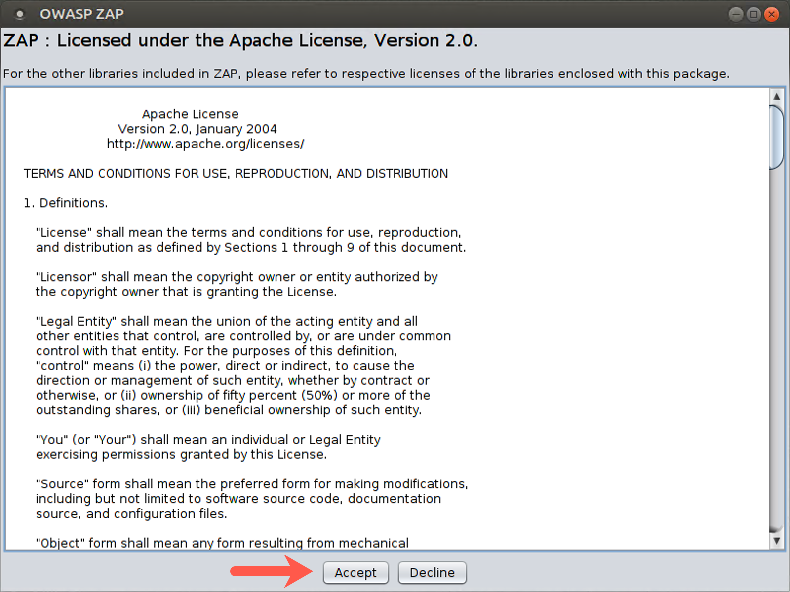
You will then be prompted, "Do you want to persist the ZAP Session?" Please select No and click Start.
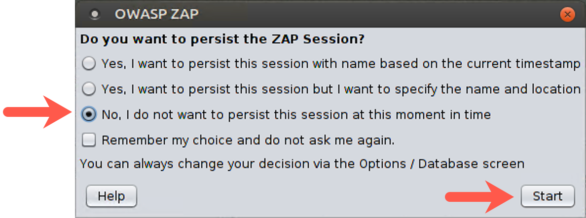
You may see a message on the screen that says, "Always check for updates on start? This option can be changed via Tools/Options." Unfortunately, even though we’ve configured ZAP not to display this message, sometimes it is still displayed. Thus, if it appears, just click Cancel.
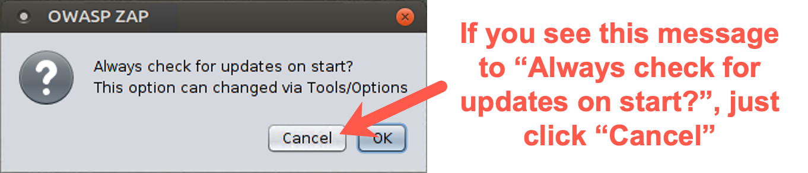
Step 2: ZAP’s main GUI.
First, let’s add a very important tab to the main portion of the screen. You should see three tabs: Quick Start, Request, and Response. To their right, you should see a green plus (+) sign. Click on the + to reveal a dropdown menu and select Break. You should now see a fourth tab to your GUI with a title of "Break."
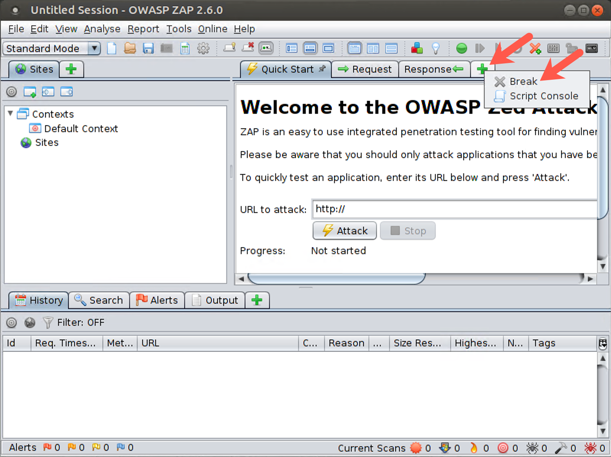
Now let’s look through the GUI. On the left side, you see the Sites pane. This is where ZAP displays the history of all pages that have been explored in this session. When you start to use ZAP, each site displays here, and under each site, you see the individual pages for that site.
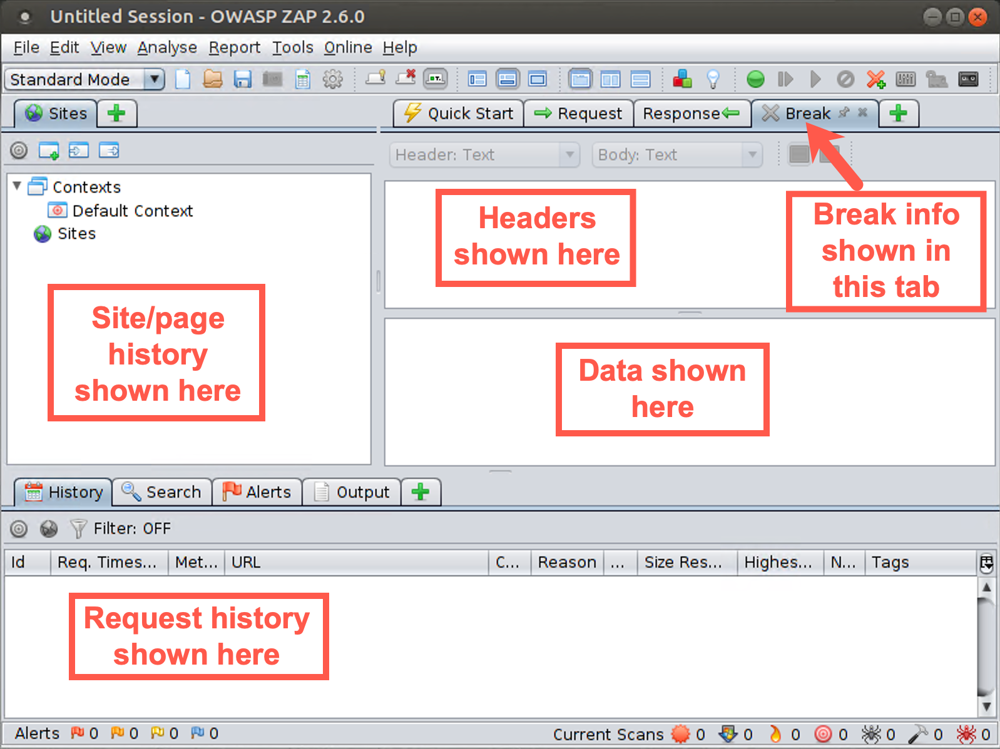
We have the bigger components of the screen on the right. Note that this section of the GUI is actually a series of tabs: Quick Start, Request, Response, and Break.
Click the Request tab near the middle of the upper part of the screen. Near the top of the screen, you can see where HTTP headers will display, with data right underneath them. You can view the header and data for Requests and Responses, as well as switch to the Break view to intercept and pause data going from browser to server or server back to browser, editing it along the way.
The request history displays near the bottom of the GUI. You can also switch this History tab to include additional tabs by clicking the plus sign. Here, you can look at the spider activity, a brute force tool that takes a list of filenames and directories and tries to determine if the target website has those pages, a fuzzer, and more.
Step 3: Configure the browser
Next, you need to configure the browser to use ZAP as a proxy.
Click the Firefox icon in the top bar of your Linux system.
Now, configure Firefox to use the ZAP proxy. We’ve installed a Firefox extension called Foxy Proxy to make this easier. To use Foxy Proxy to alter the proxy settings, in the Firefox browser to the right of the URL, there is a small fox head that is orange and should be surrounded by a red circle with a slash through it. Click the fox and select Use proxy Paros / ZAP for all URLs (ignore patterns).
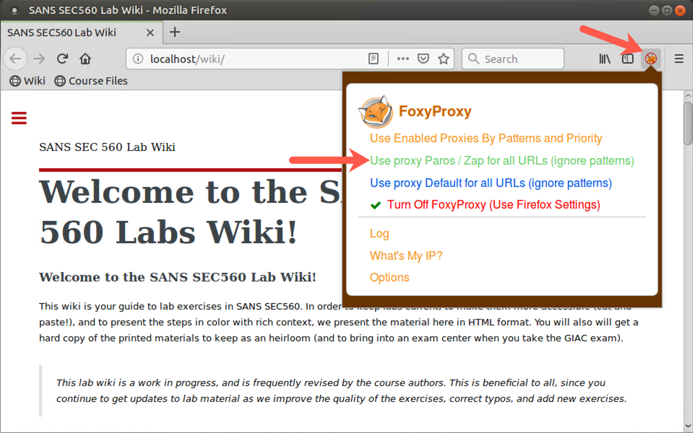
This tells Firefox to use the proxy on the local machine on TCP port 8080. The fox head next to the URL should no longer have the red circle and slash through it, but instead have the word "Paro" written over it.
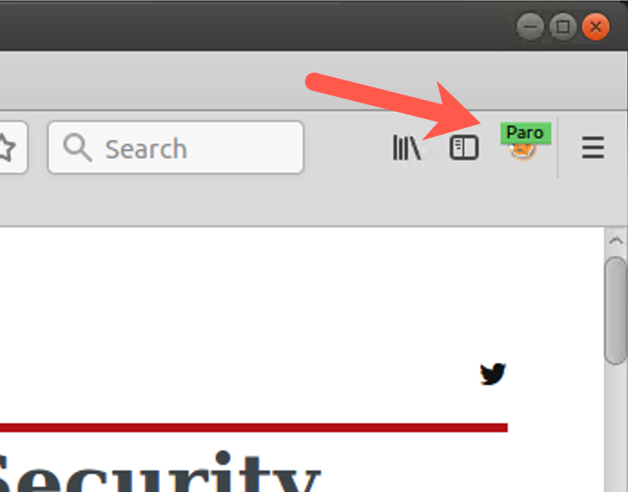
The browser is now ready to use ZAP.
Step 4: Basic usage
Now, in your browser, surf to http://10.10.10.50.
Your browser should display that webpage.
Now look in the ZAP window. In the Sites area of the screen, you should see http://10.10.10.50. Click http://10.10.10.50 in the Sites area of your ZAP screen, as shown by the arrow in the upper left section of the screenshot below. You’ll now see the request that your browser sent to the server. Look at the GET request, the User Agent field, and other settings.
Next, click the request in the history near the bottom of the screen, as indicated by the lower arrow in the screenshot below.
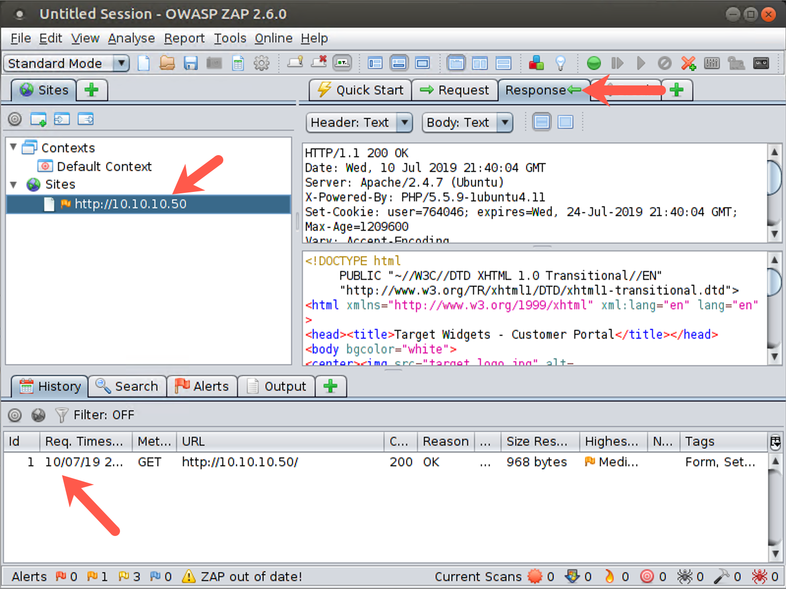
Now that we are looking at the history, we can click the Response tab, as shown by the right arrow in the screen above, observing the information the web server passed back to our browser, with the header and the data.
Step 5: View a Request in transit
Now that we’ve seen that we can monitor requests going to and from a server, let’s look at how we can alter some of these items.
Start by configuring the ZAP Break functionality. In the ZAP GUI, go to the Breakpoint button, which is the currently green circle near the top of the screen. Click this button, turning it red.
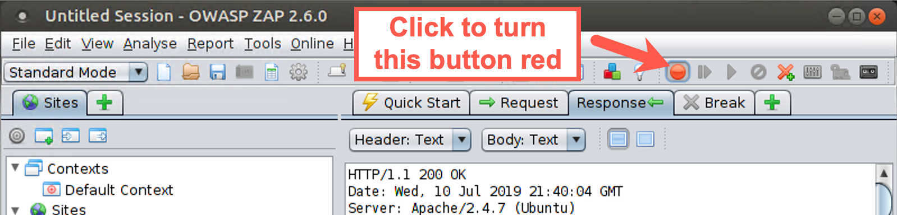
Click Reload on your browser (the little circular arrow to the left of the 10.10.10.50 location).
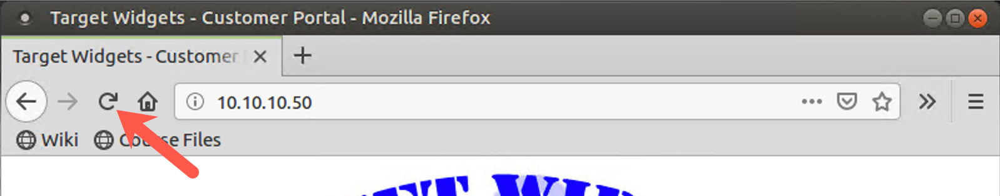
The first time you use the Break function and ZAP encounters data, it prompts you, asking whether ZAP should remain on top of other windows when a breakpoint is hit. Such behavior would interfere with our ability to see our browser, so click Cancel.
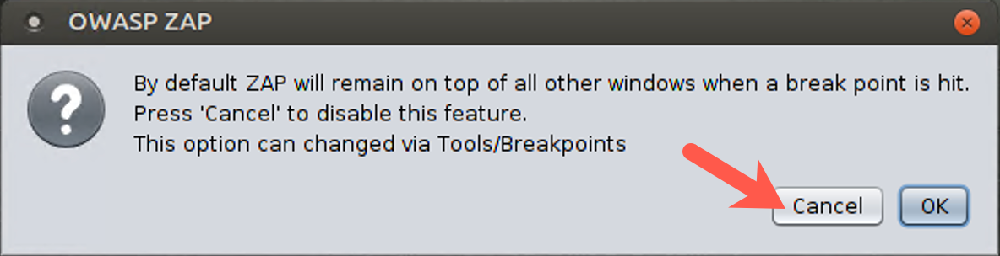
In the ZAP Break tab portion of your screen, you should see the HTTP GET Request. Look at the various elements of this request, especially the cookie, which has a name of "user" and a value of some number between 1 and 1 million.
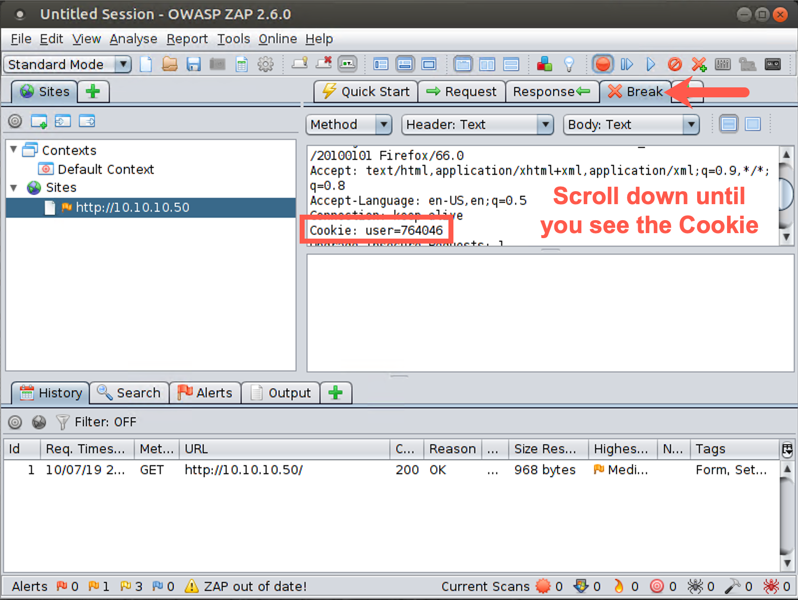
Click the Step button. This button has a right-pointing arrow with a line next to it, next to the Breakpoint button. The request will be forwarded to the server. You then see the response in the ZAP Break screen, which includes some data.
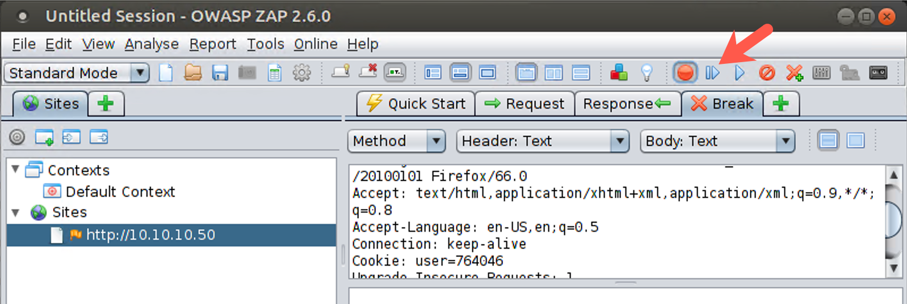
Click the Step button again to forward the response back to the browser. The browser then sends another request, asking for the logo of the target website. Click Step again to forward this request to the server. You then see the response in ZAP. Click Step again to send it back to the browser. Click Step until no further requests occur and the Break screen is blank.
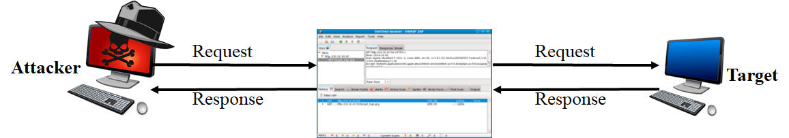
As we’ve seen, you can pause requests and responses via the Break functionality of ZAP. Next, we will try to alter them, specifically that cookie with the user number in it.
Step 6: Altering a request
With the ZAP Break functionality still enabled (that is, the Break button is red), click the Reload button in the browser again.
The request displays in the ZAP Break screen.
Make sure you are on the Break tab of ZAP. Look for the cookie, which says Cookie: user= followed by a pseudorandom value. It has the same value it had before; its value is supposed to be fixed after the browser initially surfs to the site.
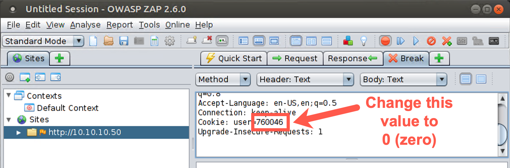
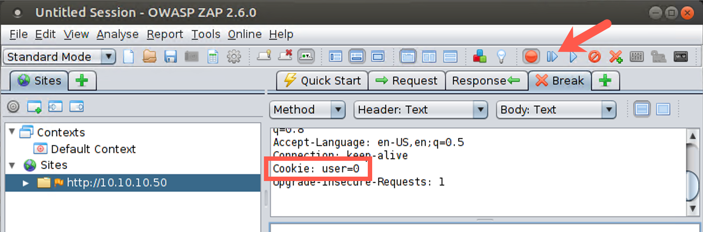
But you are going to change it. Under the Break tab, highlight the number next to the cookie name in the GUI and edit it, typing in a special number. Try setting it to a value of 0 to see what happens. Type 0 in place of your existing cookie value. Click the Step button several times. You now see the response from the server, which includes the new value of the cookie you sent. Click the Step button to send that back to the browser. Click the Step button until no further requests and responses are sent.
Note that you also have a Submit and continue button next to the Step button that looks like a right arrow (with no line next to it) and that simply pushes through all requests and responses for the given exchange and turns off the Break functionality. With this button, you don’t have to click Step repeatedly but can instead make your change in the Break tab and then let the requests and responses flow until they are done. But remember, clicking this Submit and continue button turns off the Break functionality, making the red circle turn green again.
Now look at your browser. You should see a different page, titled "Target Widgets - Admin Fun", because we submitted that interesting value of the cookie. There isn’t much functionality on this page, but it does show you some settings of the server, including the server type. By altering the cookie to a specially chosen value (0), you accessed some other function on the web server.
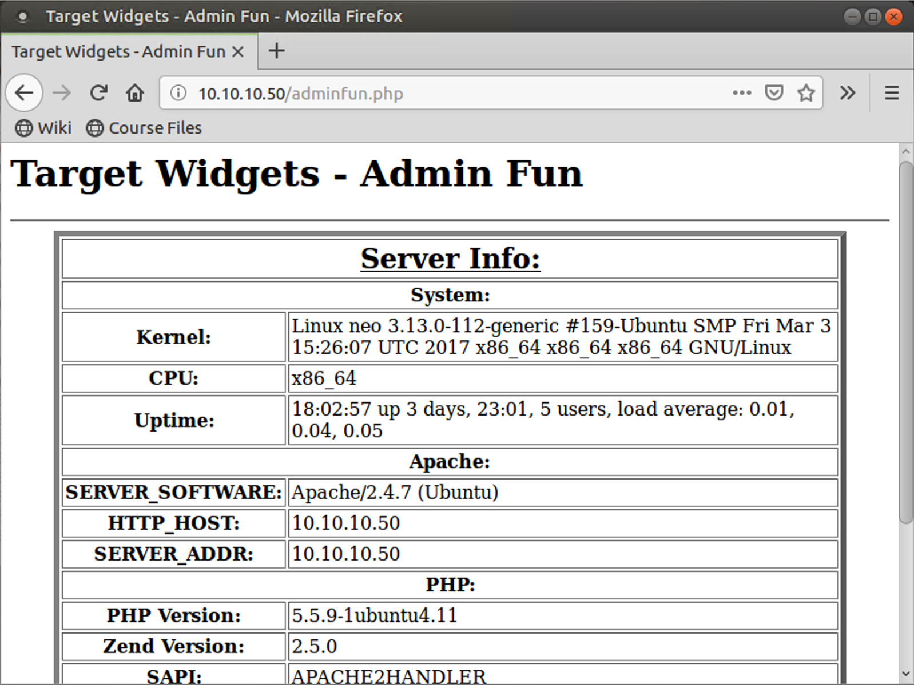
When you finish with the lab, close ZAP by clicking the X in the upper right corner of the ZAP window on your Linux screen. ZAP prompts you, asking whether it should discard the state of the current session. We do not want to save the state of this lab, so click OK to discard it. If you don’t discard the session information, it may interfere with a lab we’ll do later using ZAP. We want ZAP to be fresh the next time we start it.
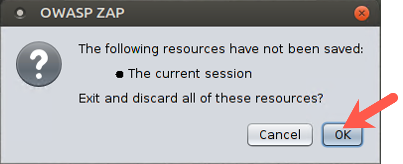
As a final step to close down the lab, clear the Firefox browser’s cookies and privacy data to have a fresh browser.
To clear the cookies and history, access the preferences by clicking the parallel bars (the hamburger) in the upper right part of the browser window and selecting Preferences.
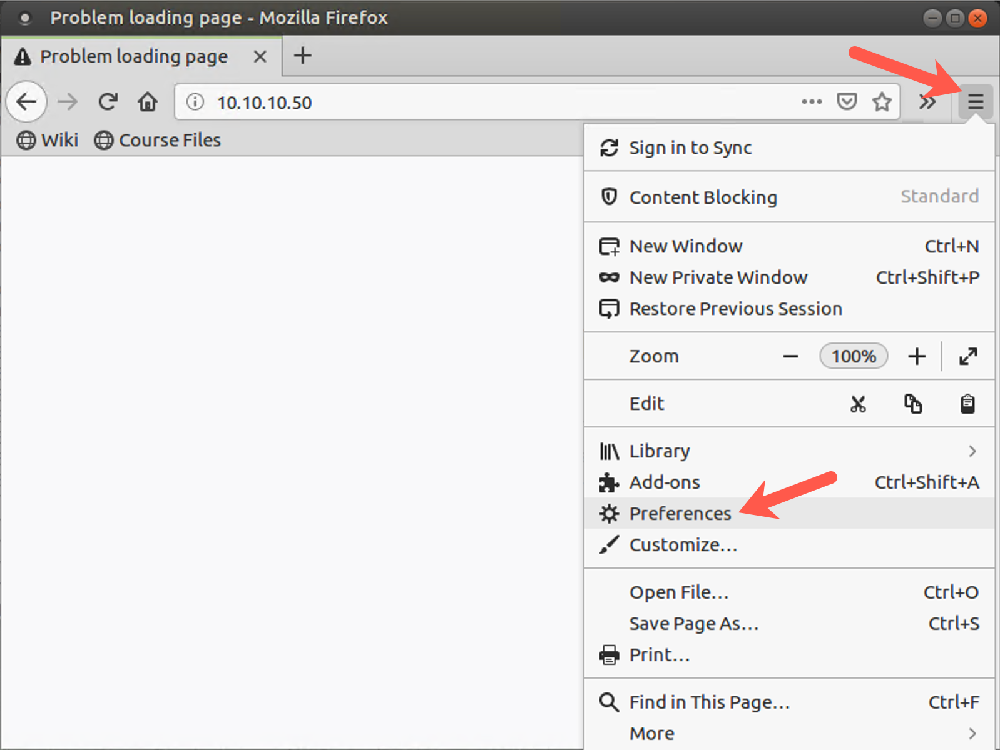
Then click Privacy & Security on the left side of the screen and scroll down to Browser Privacy.
Then scroll down to the Cookies and Site Data section and click on the Clear Data... button.
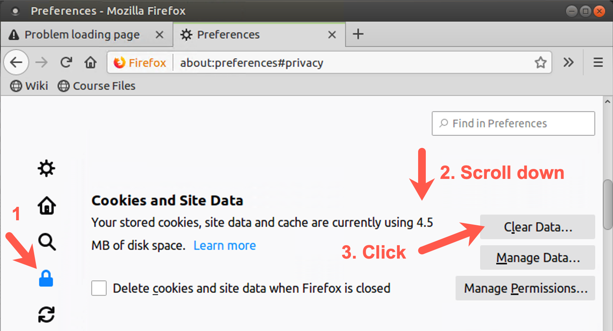
When prompted by the Clear Data screen, please click on the Clear button.
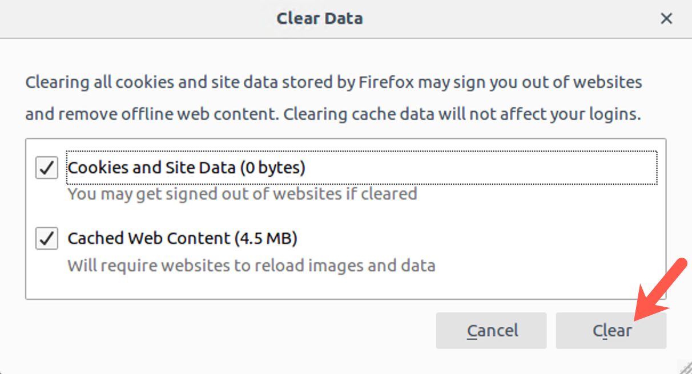
When prompted to "Clear all cookies and site data", please click the Clear Now button.
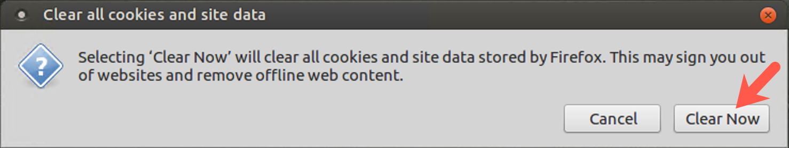
Conclusion
In this lab, we used the ZAP proxy to view HTTP requests and responses. We then used the Break functionality of ZAP to intercept and alter an HTTP response associated with a cookie. Cookie manipulation can often allow us to alter the portions of a web application we are allowed to access and possibly even to impersonate other users. In this lab, we were able to gain access to another page on the website by altering a cookie value using ZAP.